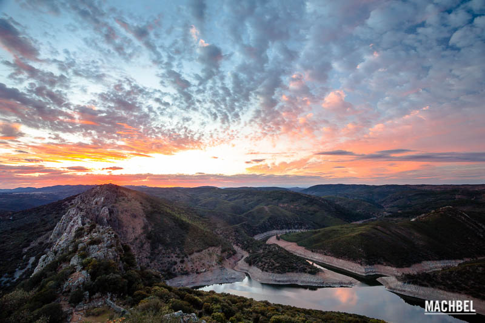

Principales Atractivos del Parque Nacional de Monfrague
Mirador del Salto del Gitano
Este es el mirador más emblemático del parque, ideal para observar aves rapaces como buitres leonados y halcones peregrinos. Se recomienda visitarlo al amanecer para evitar aglomeraciones.
Castillo de Monfragüe
Desde su torre, se pueden disfrutar vistas panorámicas espectaculares del parque. Se puede acceder a pie o mediante un autobús lanzadera gratuito desde el aparcamiento
Mirador de la Portilla del Tiétar
Ofrece vistas impresionantes del río Tiétar y es un excelente lugar para la observación de aves acuáticas.
Puente del Cardenal
Un rincón tranquilo, perfecto para un picnic, visible solo cuando el nivel del agua lo permite. Es un lugar ideal para descansar y disfrutar del entorno
Mirador de La Tajadilla
Ubicado cerca del embalse Torrejón-Tiétar, ofrece vistas del paisaje circundante y es un buen lugar para observar la fauna local
Animales que verás en el Parque Nacional de Monfrague
El Parque Nacional de Monfragüe es un paraíso para los amantes de la naturaleza y la observación de aves.
Aquí puedes ver una gran variedad de mamíferos, anfibios, peces y reptiles que son difíciles de encontrar en otros entornos.
Entre los mamíferos destacados se encuentran la nutria, el zorro, la gineta, el tejón, el gato montés, el conejo, el jabalí y el ciervo, cuyo celo, la berrea,
atrae a muchos visitantes en los primeros días de otoño. También habitan murciélagos en el parque. En cuanto a la fauna acuática, los arroyos, charcas y fuentes son lugares ideales
para la vida de los anfibios, como la ranita meridional, el gallipato, el tritón ibérico, el sapo corredor y el sapo partero ibérico. Los reptiles incluyen el lagarto ocelado, el galápago leproso,
el escaso galápago europeo y varias especies de culebras, como la de escalera y la de herradura